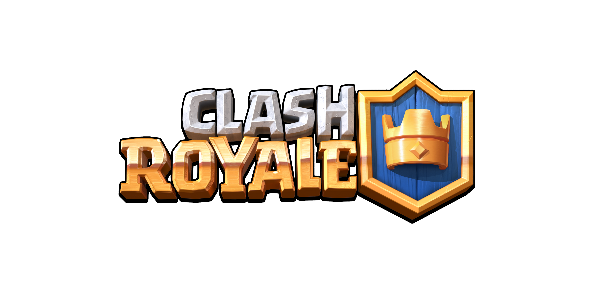

Jeux disponibles

Brawl Stars
Consulte le profil et les statistiques des joueurs.
En développement

Clash Royale
Trophées, cartes et statistiques des joueurs.
En développement

Clash of Clans
Village, clan et progression des joueurs.
En développement
Profil recherché
🔎 Recherche du joueur...
Les données réelles seront connectées dans une prochaine étape.